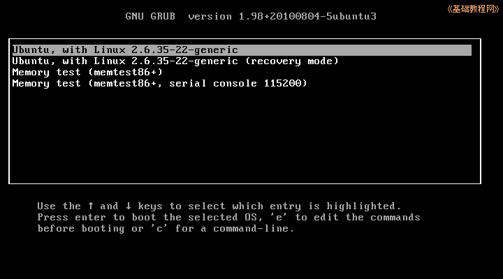
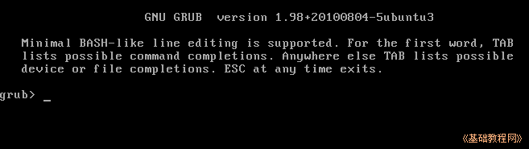
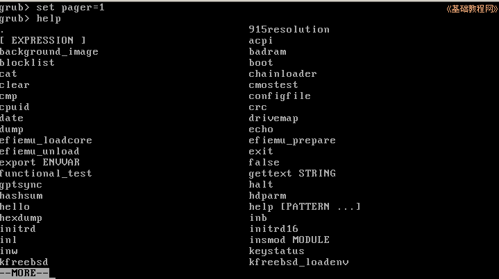
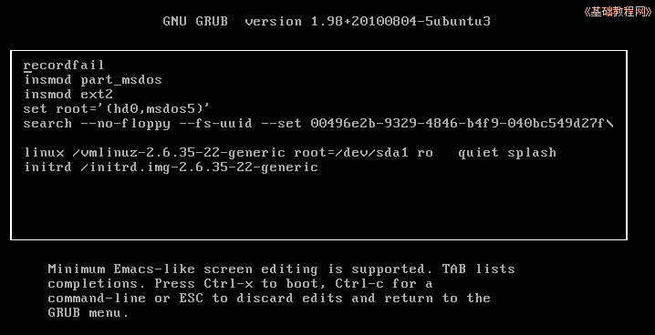
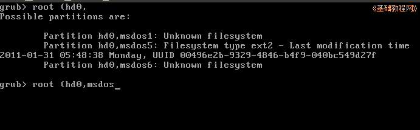

Ubuntu 命令行教程
作者：TeliuTe 来源：基础教程网
一、Grub 命令 返回目录 下一课Ubuntu 是用Grub引导的，开机后首先看到的是 Grub 命令行；
1、Grub 命令
1）等系统自检后会出来 Grub 菜单，或者按住Shift键或ESC键调出菜单；

2）菜单中列出了几个启动项，下面有操作提示，按字母 c 进入 grub 提示符；

3）常用的命令有 help、ls、root、search、linux、boot、halt、reboot 等，可以输入 help 后查看，
输完按回车，没有错误提示就是成功了，接着输入下一条；

4）按 ESC 键返回菜单，按字母 e 编辑菜单命令，编辑完以后，按 Ctrl+X运行；

5）输入一个命令后，按 Tab 键可以自动补全，这样更方便一些；

本节学习了grub命令的基础知识，如果你成功地完成了练习，请继续学习下一课内容；
本教程由86团学校TeliuTe制作|著作权所有
基础教程网：http://teliute.org/
美丽的校园……
转载和引用本站内容，请保留版权信息和本站链接。